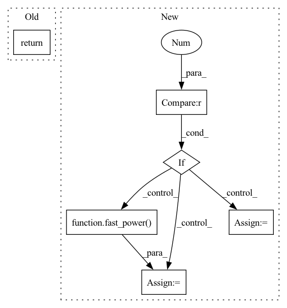

Pattern ID :10255
Before Change
if len(derivative) == 1:
return output[0]
else:
return output
def SphericalHarmonics(xyz, l, m, derivative=0, jacobian=True):After Change
else:
return torch.stack((dx, dy, dz), dim=-1)
elif derivative == 2 :
// prepare the exponets
km2 = k - 2
km2[km2 < 0] = 0
xyz_km2 = fast_power(xyz, km2)
xyz_k = fast_power( xyz, k, mask0, mask2)
kx, ky, kz = k.transpose(0, 1)
d2x = kx*(kx-1) * xyz_km2[..., 0] * \
xyz_k[..., 1] * xyz_k[..., 2]
d2y = ky*(ky-1) * xyz_k[..., 0] * \
xyz_km2[..., 1] * xyz_k[..., 2]In pattern: SUPERPATTERN
Frequency: 4
Non-data size: 6
Instances Fragment ID: 36135463
Project Name: nlesc-jcer/qmctorch
Commit Name: 6e7d0d79be15381fa2703a929374c186832b8f99
Time: 2020-06-04
Author: nicolas.gm.renaud@gmail.com
File Name: qmctorch/wavefunction/spherical_harmonics.py
M Class Name: AnonimousClass
N Class Name: AnonimousClass
M Method Name: CartesianHarmonics(6)
N Method Name: CartesianHarmonics(6)
M Parent Class:
N Parent Class:
M File Name: qmctorch/wavefunction/spherical_harmonics.py
N File Name: qmctorch/wavefunction/spherical_harmonics.py
M Start Line: 148
M End Line: 163
N Start Line: 110
N End Line: 223
Before Change
output.append(fns[d]())
if len(derivative) == 1:
return output[0]
else:
return output
After Change
return rn * expr
elif derivative > 0 :
rn = fast_power( R, bas_n)
nabla_rn = (bas_n * R**(bas_n - 2)).unsqueeze(-1) * xyz
er = torch.exp(-bas_exp * R**2)
nabla_er = -2 * (bas_exp * er).unsqueeze(-1) * xyz
if derivative == 1:
if jacobian:
nabla_rn = nabla_rn.sum(3)
nabla_er = nabla_er.sum(3)
return nabla_rn * er + rn * nabla_er
else:
return nabla_rn * \
er.unsqueeze(-1) + rn.unsqueeze(-1) * nabla_er
elif derivative == 2:
lap_rn = bas_n * (3 * R**(bas_n - 2)
+ (xyz**2).sum(3) * (bas_n - 2) * R**(bas_n - 4))
lap_er = 4 * bas_exp**2 * (xyz**2).sum(3) * er \
- 6 * bas_exp * er
return lap_rn * er + 2 * \ Fragment ID: 36135663
Project Name: nlesc-jcer/qmctorch
Commit Name: 1637f0d53fb2a5f7e5a8c58b5dd47eca8e885164
Time: 2020-06-04
Author: nicolas.gm.renaud@gmail.com
File Name: qmctorch/wavefunction/radial_functions.py
M Class Name: AnonimousClass
N Class Name: AnonimousClass
M Method Name: radial_gaussian(6)
N Method Name: radial_gaussian(6)
M Parent Class:
N Parent Class:
M File Name: qmctorch/wavefunction/radial_functions.py
N File Name: qmctorch/wavefunction/radial_functions.py
M Start Line: 109
M End Line: 128
N Start Line: 89
N End Line: 123
Before Change
torch.tensor: values of each orbital radial part at each position
if derivative == 0:
return R**bas_n * torch.exp(-bas_exp * R**2)
elif derivative > 0:
After Change
if derivative == 0:
if bas_n.max() < 3 :
rn = fast_power( R, bas_n)
else:
rn = R**bas_n
expr = torch.exp(-bas_exp * R*R)
Fragment ID: 36135647
Project Name: nlesc-jcer/qmctorch
Commit Name: 98a99b62b539293ba141a9b4591dbcd1332b9b73
Time: 2020-05-21
Author: nicolas.gm.renaud@gmail.com
File Name: qmctorch/wavefunction/radial_functions.py
M Class Name: AnonimousClass
N Class Name: AnonimousClass
M Method Name: radial_gaussian(6)
N Method Name: radial_gaussian(6)
M Parent Class:
N Parent Class:
M File Name: qmctorch/wavefunction/radial_functions.py
N File Name: qmctorch/wavefunction/radial_functions.py
M Start Line: 93
M End Line: 93
N Start Line: 95
N End Line: 102
Before Change
if derivative == 0:
return R**bas_n * torch.exp(-bas_exp * R)
elif derivative > 0:
After Change
if derivative == 0:
if bas_n.max() < 3 :
rn = fast_power( R, bas_n)
else:
rn = R**bas_n
expr = torch.exp(-bas_exp * R)
Fragment ID: 36135353
Project Name: nlesc-jcer/qmctorch
Commit Name: 1deda52cad9da0398f94d003b36f3263c67d52eb
Time: 2020-05-14
Author: nicolas.gm.renaud@gmail.com
File Name: qmctorch/wavefunction/radial_functions.py
M Class Name: AnonimousClass
N Class Name: AnonimousClass
M Method Name: radial_slater(6)
N Method Name: radial_slater(6)
M Parent Class:
N Parent Class:
M File Name: qmctorch/wavefunction/radial_functions.py
N File Name: qmctorch/wavefunction/radial_functions.py
M Start Line: 24
M End Line: 24
N Start Line: 26
N End Line: 33